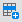
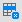

Infor VISUAL features modern navigation controls and convenient dockable toolbars. By repositioning these toolbars or allowing them to remain free of the window (floating), you can change the appearance of a window to your individual preferences.
All VISUAL toolbars contain buttons that allow you to perform some of the more basic VE functions; such as Save, Refresh, and Print. Maintenance windows have fewer buttons, because you mostly use these windows to enter, maintain, and report basic information; Entry windows, such as Customer Order Entry, have two toolbars, one for basic options and one for advanced options.
Infor VISUAL windows feature a dockable toolbar containing the full Infor VISUAL main menu. Display icons as small icons or large icons and drag the toolbar to float or inhabit a position at the left, right, bottom, or top of the window.
Common Main and Table Toolbar Buttons
Some toolbar buttons are common to nearly every VISUAL window. They are shortcuts for options found mostly under the File, Edit and Notes menus. These common buttons allow you to perform such basic but important tasks as saving, deleting, clearing, printing, refreshing, and inserting new lines. Most of these buttons are found on main toolbars. Table toolbars also feature common buttons, but tend to hold more specialized, application-specific buttons. The following list shows some of the more prevalent buttons; of course, come windows may be exceptions and may not contain these buttons.
Main Toolbar
 Save
- The Save button saves information presently in the window you are
using. VISUAL saves unless you have entered an incomplete record.
Save
- The Save button saves information presently in the window you are
using. VISUAL saves unless you have entered an incomplete record.
New - The New button clears the window and prepares it for a new document.
 Refresh - The Refresh button refreshes the display in the current
window from the database.
Refresh - The Refresh button refreshes the display in the current
window from the database.
 Delete - The Delete
button allows you to delete the document you are currently viewing.
Be sure you want to delete the document before proceeding; VISUAL
asks you to confirm as a safeguard.
Delete - The Delete
button allows you to delete the document you are currently viewing.
Be sure you want to delete the document before proceeding; VISUAL
asks you to confirm as a safeguard.
 Print - A Print button allows you to print
the document you are currently viewing. In most cases, you can also
print a range.
Print - A Print button allows you to print
the document you are currently viewing. In most cases, you can also
print a range.
 Previous - In some
windows, such as Vendor Maintenance, the previous button allows you
to call up the vendor previous to the vendor currently in the window.
VISUAL uses alphabetic order to display the previous vendor.
Previous - In some
windows, such as Vendor Maintenance, the previous button allows you
to call up the vendor previous to the vendor currently in the window.
VISUAL uses alphabetic order to display the previous vendor.
Next - In some windows, such as Vendor Maintenance, the next button allows you to call up the next alphabetic vendor into the window.
 Notations - A Notations button allows you
to enter notes for an order, customer, vendor, or other document/object
in the database. In some windows, you can add more than one type
of notation. In these windows, the system displays Notation buttons
which are differentiated by color or by a user image. If there are
no associated notations, a diagonal line displays on the notations
toolbar button.
Notations - A Notations button allows you
to enter notes for an order, customer, vendor, or other document/object
in the database. In some windows, you can add more than one type
of notation. In these windows, the system displays Notation buttons
which are differentiated by color or by a user image. If there are
no associated notations, a diagonal line displays on the notations
toolbar button.
 Specifications - A Specifications button
allows you to enter specs for an order, customer, vendor, or other
document/object in the database. Frequently, in the table toolbar,
there is a similar button that allows you to enter specifications
for individual line items. If there are no associated specifications,
a diagonal line displays on the specifications toolbar button.
Specifications - A Specifications button
allows you to enter specs for an order, customer, vendor, or other
document/object in the database. Frequently, in the table toolbar,
there is a similar button that allows you to enter specifications
for individual line items. If there are no associated specifications,
a diagonal line displays on the specifications toolbar button.
 Send To - The Send To button allows you
to send a document through Microsoft Outlook to another VE user with
access to the same database.
Send To - The Send To button allows you
to send a document through Microsoft Outlook to another VE user with
access to the same database.
Table Toolbar

Insert Line - The Insert Line button lets you insert a line into an entry application’s line item table. For example, to add a line to a customer order in Customer Order Entry, click this button.
Delete Line - The Delete Line button lets you delete a line from an order/document. Select a line and click the Delete button to remove a new line from the table.
Line Specs - The Line Specifications button
lets you to enter specs for individual line items. If there are no
associated specifications, a diagonal line displays on the specifications
toolbar button.
Picture - The picture button allows you to associate a bitmap to a line item. For example, you can attach a picture of a part/material/service to a purchase order line.
Repeat Row - The Repeat button lets you repeat a line’s information. VISUAL adds an identical line to save you the time of reentering the same information.
ToolTips in Toolbars
All buttons on toolbars feature ToolTips. ToolTips are mini pop-up windows that tell you the function of the particular button to which you’re pointing.
Arranging Main Toolbars
You can arrange toolbars so they reside on any of the four sides
of a VISUAL application or float independently atop the window. By
default, toolbars are positioned at the top of the window. By placing
your mouse pointer over the toolbar grippers  you can drag the toolbar anywhere on the window. As you move the toolbar
close to an area where it’s possible to dock the toolbar, the toolbar
outline changes from a thick bold border to a normal style border.
This is when you can release the grippers and dock the toolbar in
the window.
you can drag the toolbar anywhere on the window. As you move the toolbar
close to an area where it’s possible to dock the toolbar, the toolbar
outline changes from a thick bold border to a normal style border.
This is when you can release the grippers and dock the toolbar in
the window.
Resizing Main Toolbars
When used as floating toolbars, you can resize toolbars by stretching them when the mouse pointer. Placed near a corner of toolbar, the mouse pointer becomes a resizer, vertical, horizontal, or diagonal, depending on where the pointer is. Move the resizer as necessary to stretch the toolbar. Resized any larger than the default size, the toolbar reverts to its default size when you dock it again in the window.
Turning Toolbars On and Off
Toolbars do not have to display. If you would rather use your VISUAL applications without the benefit of toolbars, you can switch them off.
From the Options menu of any Infor VISUAL application, clear the check mark next to Main Toolbar. In some applications, there is a Table Toolbar selection as well. Clear that if necessary.
VISUAL clears the check mark next to the option and the Main Toolbar disappears.
Also, you can drag the toolbar to float over the window and close it as you would any window, using the close button in the upper-right corner.
To reactivate toolbars, from the options menu, select Main Toolbar.
VISUAL places a check mark next to the option and the Main Toolbar appears.
Command Toolbars in VISUAL Applications
Much like the VISUAL Personal Menu Toolbar available from the Infor VISUAL main menu, command toolbars allow you to access VISUAL applications through a Microsoft Outlook style toolbar, consisting of groups (outlook bars) and items, which you can represent with small or large icons. You cannot, however, customize command toolbars as you can the VISUAL Personal Menu Toolbar. To modify command toolbars, modify the VE Personal Menu Toolbar. Any changes you make to the personal menu toolbar appear in each command toolbar in each application. For more on modifying the VISUAL Personal Menu Toolbar, see the previous section.
Choosing Small or Large Icons in Command Toolbars
You can choose to display application icons as either large or small. The significance of this choice is purely a matter of personal preference. With small icons you can view as many as fifteen icons at one time in a normally sized command toolbar; with large icons, you can view about six without scrolling.
To change the size of icons, right-click the command toolbar.
The Small Icons pop out menu appears.
Select Small Icons to change the display. The Small Icons pop out menu appears regardless of which icons are currently displaying.
Arranging Command Toolbars
You can arrange command toolbars so they are positioned on any of the four sides of a VISUAL application or float independently atop the window. By default, toolbars are positioned at the top of the window. By placing your mouse pointer on the toolbar grippers, you can drag the toolbar anywhere on the window. As you move the toolbar close to an area where it’s possible to dock the toolbar, the toolbar outline changes from a thick bold border to a normal style border. This is when you can release the grippers and dock the toolbar in the window.